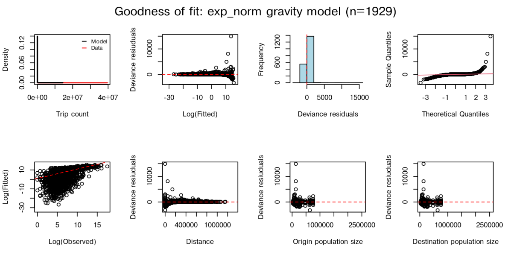
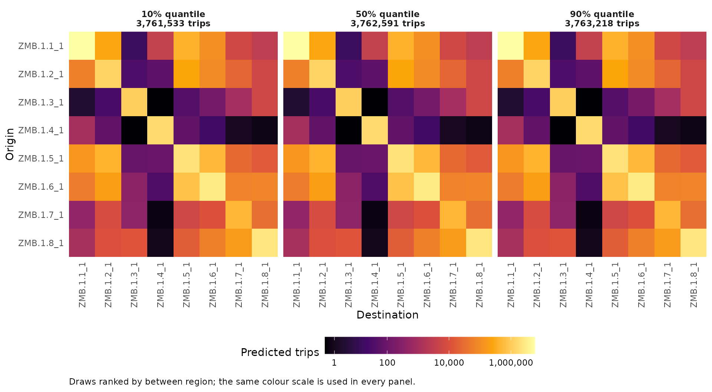
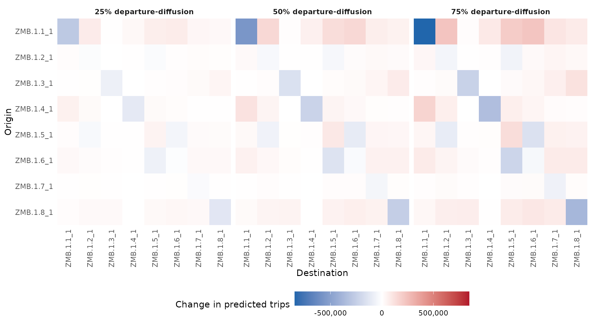

Selecting a mobility model
selecting-a-model.RmdThis walkthrough starts with a dataset, compares its fitted models,
and predicts movement for a common set of regions. You will finish with
an explicit ensemble and heatmaps comparing several weights. You need
nomad; no private trip data are needed. Long setup and
plotting blocks can be expanded when you want to inspect the code.
Prediction warnings are retained in expandable panels beside each
result; open them to check how the example differs from the fitted
setting.
Find a relevant source
Start with the setting you want to study. Country alone is not
enough: consider how movement was measured, the administrative scale,
and the population sampled. Here we inspect the Zambia datasets.
has_fitted_models distinguishes catalogue entries from
datasets you can actually use for prediction.
mobility_table(country = "ZMB")[, c(
"name", "aggregation", "has_fitted_models", "prediction_period_days", "distance_unit"
)]#> # A tibble: 3 × 5
#> name aggregation has_fitted_models prediction_period_days distance_unit
#> <chr> <chr> <lgl> <dbl> <chr>
#> 1 zmb_cdr_20… admin_2 TRUE NA m
#> 2 zmb_fb_2020 admin_2 TRUE NA km
#> 3 zmb_fb_2025 admin_2 TRUE 21 mThe new Facebook models describe an average 21-day trip matrix. Collection dates describe when observations were gathered, not the interval represented by each prediction. The original Zambia models have unknown prediction periods, so we will use the new dataset for this comparison.
Compare fits to the same observations
A dataset can have several fitted model families. The following table shows their errors and whether they support new locations. Lower RMSE means smaller typical errors against that dataset’s observed flows; it is not evidence that a model will transfer successfully to another setting.
candidates <- model_table(data_name = "zmb_fb_2025")
knitr::kable(candidates[, c("model_type", "mobility_model", "RMSE", "max_rhat", "supports_newdata")],
digits = 2, col.names = c("Type", "Family", "RMSE", "Maximum R-hat", "New regions"))| Type | Family | RMSE | Maximum R-hat | New regions |
|---|---|---|---|---|
| exp | departure-diffusion | 946017.6 | 1.01 | TRUE |
| power | departure-diffusion | 946520.7 | 1.01 | TRUE |
| radiation | departure-diffusion | 946972.8 | 1.01 | TRUE |
| basic | gravity | 819787889.5 | 1.00 | TRUE |
| exp | gravity | 947086.4 | 1.05 | TRUE |
| exp_norm | gravity | 965441.9 | 1.01 | TRUE |
| power | gravity | 942100.3 | 1.55 | TRUE |
| power_norm | gravity | 946881.4 | 1.00 | TRUE |
| scaled_power | gravity | 952655.1 | 1.03 | TRUE |
| transport | gravity | 1057907.1 | 1.00 | TRUE |
| basic | radiation | 831655.6 | NA | FALSE |
| finite | radiation | 833481.7 | NA | FALSE |
Inspect max_rhat alongside fit error. A high stored
R-hat raises a convergence concern; rhat_above_1_1 is a
review flag, not a claim that unflagged fits are validated. Consult
summary(model) for parameter-level diagnostics. Supplied
parameters are preserved, including flagged fits.
DIC was not calculated for these fits. Requesting DIC weights therefore gives an error, including when only one selected model lacks DIC. We can instead request RMSE weights because those statistics are available. Compare fit-derived weights within one dataset; use deliberate manual weights for comparisons across sources.
weights <- model_weights(data_name = "zmb_fb_2025", metric = "RMSE")
knitr::kable(weights[, c("name", "RMSE", "weight")], digits = c(0, 1, 3))| name | RMSE | weight |
|---|---|---|
| zmb_fb_2025_mod_dd_exp | 946017.6 | 0.090 |
| zmb_fb_2025_mod_dd_power | 946520.7 | 0.090 |
| zmb_fb_2025_mod_dd_radiation | 946972.8 | 0.090 |
| zmb_fb_2025_mod_grav_basic | 819787889.5 | 0.000 |
| zmb_fb_2025_mod_grav_exp | 947086.4 | 0.090 |
| zmb_fb_2025_mod_grav_exp_norm | 965441.9 | 0.088 |
| zmb_fb_2025_mod_grav_power | 942100.3 | 0.090 |
| zmb_fb_2025_mod_grav_power_norm | 946881.4 | 0.090 |
| zmb_fb_2025_mod_grav_scaled_power | 952655.1 | 0.089 |
| zmb_fb_2025_mod_grav_transport | 1057907.1 | 0.080 |
| zmb_fb_2025_mod_rad_basic | 831655.6 | 0.102 |
| zmb_fb_2025_mod_rad_finite | 833481.7 | 0.102 |
Weights are a starting point for sensitivity analysis. They do not account for all differences between the source setting and your application.
Inspect the source and diagnostics
We will compare normalised exponential gravity with exponential departure-diffusion, both fitted to the same Facebook dataset. These examples use fits with stored maximum R-hat of 1.01 and minimum effective sample sizes above 600; those summaries inform the choice without establishing complete convergence. The profile reports fitted distance units, population scale and prediction period; the saved plot shows agreement with the original observations even though private trip data are not distributed.
gravity <- model_db$zmb_fb_2025_mod_grav_exp_norm
departure <- model_db$zmb_fb_2025_mod_dd_exp
model_profile(gravity)#> # A tibble: 1 × 27
#> name data_name country aggregation date_start date_end source_duration_days
#> <chr> <chr> <chr> <chr> <date> <date> <dbl>
#> 1 zmb_… zmb_fb_2… ZMB admin_2 2024-07-29 2025-06-16 21
#> # ℹ 20 more variables: prediction_period_days <dbl>, distance_unit <chr>,
#> # supports_newdata <lgl>, supports_stochastic_draws <lgl>, n_origin <int>,
#> # n_dest <int>, distance_min <dbl>, distance_q25 <dbl>,
#> # distance_median <dbl>, distance_q75 <dbl>, distance_max <dbl>,
#> # population_total <dbl>, population_min <dbl>, population_median <dbl>,
#> # population_max <dbl>, max_rhat <dbl>, min_n_eff <dbl>,
#> # rhat_above_1_1 <lgl>, has_mobility_data <lgl>, has_saved_check <lgl>
check(gravity, plots = FALSE)#> $DIC
#> [1] NA
#>
#> $RMSE
#> [1] 965441.9
#>
#> $MAPE
#> [1] 32.18002
#>
#> $R2
#> [1] 0.1056686
plot(gravity)
Look for systematic departures from agreement, not only the summary error. A good source-data fit still needs the following checks before transfer.
Prepare a common prediction setting
For a small example, take eight regions from the source covariates.
Rows of D identify origins, columns identify destinations,
and N gives each region’s population. The example preserves
those names so predictions can be aligned. In a real application,
replace these with your regions and population estimates.
source <- gravity$get_model()$data
regions <- rownames(source$D)[1:8]
newdata <- list(
D = source$D[regions, regions],
N = source$N_orig[regions]
)These distances are in metres. Declaring unit makes
conversion explicit; nomad converts separately for each fitted model.
The warnings about fewer regions or a smaller population are useful
here: this subset is smaller than the full source setting. Transfer is
supported, but its interpretation needs care.
a <- predict(gravity, newdata = newdata, unit = "m", duration = 21)
b <- predict(departure, newdata = newdata, unit = "m", duration = 21)
round(a[1:4, 1:4])#> destination
#> origin ZMB.1.1_1 ZMB.1.2_1 ZMB.1.3_1 ZMB.1.4_1
#> ZMB.1.1_1 5822213 268155 15 3706
#> ZMB.1.2_1 60209 1307265 31 57
#> ZMB.1.3_1 3 27 1101759 0
#> ZMB.1.4_1 995 68 0 1562487Show prediction warnings
#> Warning: ! Prediction data have far fewer regions than the fitted source data.
#> ℹ `newdata` has "8" regions; the fitted model has "115".
#> • Predictions may be coarser than the source data can support.#> Warning: ! Prediction population is much smaller than the fitted source population.
#> ℹ `newdata` population: "1538603"; fitted model source population: "18296043".
#> • Check that this model is suitable for the population scale being predicted.#> Warning: ! Prediction data have far fewer regions than the fitted source data.
#> ℹ `newdata` has "8" regions; the fitted model has "115".
#> • Predictions may be coarser than the source data can support.
#> ! Prediction population is much smaller than the fitted source population.
#> ℹ `newdata` population: "1538603"; fitted model source population: "18296043".
#> • Check that this model is suitable for the population scale being predicted.Each entry is predicted trips from its row region to its column region over 21 days. It is not a probability or a count of unique travellers. A 42-day request would double these values under a constant-rate assumption; it would not model seasonality. Leave duration unset for an original Zambia model with an unknown period: unscaled prediction warns, whereas duration conversion errors.
Recognise unsupported requests
Basic and finite radiation models retain predictions for their exact
original regions and populations. They cannot transfer the stored matrix
to the eight-region subset above. Nomad rejects that request directly,
including through an ensemble, and explains how to choose a transferable
model or recalculate radiation with mobility when you have
the necessary trip totals.
#> [1] 115 115Changing the target country, spatial scale or population of a
transferable model produces advisory warnings, rather than this
radiation capability error. Supply locations as an
sf object or longitude/latitude table to enable country
checks. No bundled model represents international travel. Check those
warnings before interpreting a cross-border prediction.
Inspect uncertainty
A point prediction uses mean parameter estimates. With
nsim = 100, a supported model returns an array whose third
dimension indexes simulated matrices. The summary below describes
variation in total and between-region movement.
The current mobility predictor samples each parameter
independently from a normal distribution truncated at zero, using its
stored mean and standard deviation. These are approximate parameter
draws, not joint samples from the fitted MCMC chains. They omit
parameter correlations and add no observation noise, uncertainty in
populations or distances, or uncertainty from transferring the model to
another setting.
draws <- predict(gravity, newdata = newdata, unit = "m", nsim = 100, seed = 42)
uncertainty_summary(draws, metrics = c("total", "between_region", "max"))#> # A tibble: 9 × 3
#> metric prob value
#> <chr> <dbl> <dbl>
#> 1 total 0.025 21374078.
#> 2 total 0.5 21377435.
#> 3 total 0.975 21380787.
#> 4 between_region 0.025 3760995.
#> 5 between_region 0.5 3762604.
#> 6 between_region 0.975 3763534.
#> 7 max 0.025 5821286.
#> 8 max 0.5 5822177.
#> 9 max 0.975 5823186.
selected <- uncertainty_matrices(draws, metric = "between_region", probs = c(0.1, 0.5, 0.9))
attr(selected, "selected")#> # A tibble: 3 × 4
#> name prob simulation value
#> <chr> <dbl> <int> <dbl>
#> 1 q0.1 0.1 71 3761533.
#> 2 q0.5 0.5 46 3762591.
#> 3 q0.9 0.9 54 3763218.Show prediction warnings
#> Warning: ! Prediction data have far fewer regions than the fitted source data.
#> ℹ `newdata` has "8" regions; the fitted model has "115".
#> • Predictions may be coarser than the source data can support.#> Warning: ! Prediction population is much smaller than the fitted source population.
#> ℹ `newdata` population: "1538603"; fitted model source population: "18296043".
#> • Check that this model is suitable for the population scale being predicted.The selected matrices represent lower, middle and upper movement according to that metric. They are complete draws, rather than a matrix made by taking an independent quantile in each cell. Changing the metric may select different draws. All three heatmaps share the same colour scale, so the same colour means the same trip count. The colour scale uses log(1 + trips) to keep smaller flows visible, including zeros.
plot_uncertainty(draws, metric = "between_region", probs = c(0.1, 0.5, 0.9))
The small difference between these panels is present in the supplied fit. We can check its parameter summaries and quantify the spread in between-region trips:
parameter_summary <- gravity$get_model()$summary[, c("mean", "sd")]
parameter_summary#> mean sd
#> delta 2.897039e+04 2.454642e+00
#> omega 3.129614e-07 3.045025e-07
#> theta 1.389407e+01 1.247901e-03
between <- mobility_metrics(draws)$between_region
interval <- stats::quantile(between, c(0.1, 0.5, 0.9))
relative_width <- 100 * (interval[3] - interval[1]) / interval[2]For these 100 draws, the 10th-to-90th percentile interval is only
0.045% of the median between-region trip total. The movement-rate
parameter theta and distance parameter delta
have very small stored standard deviations relative to their means. In
this normalised gravity model, total trips are
theta * sum(N), which also constrains variation in the
total. The destination-population exponent omega is close
to zero.
This measures a narrow part of uncertainty under one fitted model. It
does not establish that trips in these regions are known that precisely.
Increasing nsim gives more draws from the same
approximation; it does not add missing sources of uncertainty. Comparing
different mobility assumptions is therefore a separate, useful
sensitivity analysis.
Compare and combine predictions
Both matrices now describe the same named target regions and period. Their difference is meaningful. Using gravity as the baseline, positive entries below mean that departure-diffusion predicts more trips. Nomad aligns reordered region names and rejects matrices referring to different target regions.
round(prediction_difference(b, a)[1:4, 1:4])#> destination
#> origin ZMB.1.1_1 ZMB.1.2_1 ZMB.1.3_1 ZMB.1.4_1
#> ZMB.1.1_1 -1128508 307408 15413 114280
#> ZMB.1.2_1 44364 -67050 6347 7896
#> ZMB.1.3_1 9617 21863 -314477 634
#> ZMB.1.4_1 225565 83989 1951 -452055
ensemble <- nomad_ensemble(list(gravity = gravity, departure = departure),
weights = c(gravity = 0.6, departure = 0.4))
combined <- predict(ensemble, newdata = newdata, unit = "m", duration = 21)#> gravity departure ensemble
#> 21377461 21763957 21532059Show prediction warnings
#> Warning: ! Prediction data have far fewer regions than the fitted source data.
#> ℹ `newdata` has "8" regions; the fitted model has "115".
#> • Predictions may be coarser than the source data can support.#> Warning: ! Prediction population is much smaller than the fitted source population.
#> ℹ `newdata` population: "1538603"; fitted model source population: "18296043".
#> • Check that this model is suitable for the population scale being predicted.#> Warning: ! Prediction data have far fewer regions than the fitted source data.
#> ℹ `newdata` has "8" regions; the fitted model has "115".
#> • Predictions may be coarser than the source data can support.#> Warning: ! Prediction population is much smaller than the fitted source population.
#> ℹ `newdata` population: "1538603"; fitted model source population: "18296043".
#> • Check that this model is suitable for the population scale being predicted.These manual weights state our choice explicitly. Equal weights are also a valid choice, but nomad will never substitute them when requested fit-based weights cannot be calculated.
To see how those choices affect individual flows, compare three fixed weights against the gravity prediction. Each panel below shows ensemble minus gravity: red cells mean more trips than gravity predicts, blue cells mean fewer, and white means no change. Rows are origins and columns are destinations, including trips that stay within the same region on the diagonal.
All panels use the same colour limits, centred on zero. The weights
are illustrative sensitivity choices, not estimates of which model is
correct. With two fixed component matrices, the difference is
weight * (departure - gravity), so the pattern stays the
same while its magnitude changes.
Show how to compare fixed ensemble weights
weights <- c(0.25, 0.5, 0.75)
differences <- lapply(weights, function(weight) {
candidate <- nomad_ensemble(list(gravity = gravity, departure = departure),
weights = c(gravity = 1 - weight, departure = weight))
prediction <- predict(candidate, newdata = newdata, unit = "m", duration = 21)
cells <- as.data.frame(as.table(prediction_difference(prediction, a)))
names(cells) <- c("origin", "destination", "difference")
cells$weight <- paste0(100 * weight, "% departure-diffusion")
cells
})
changes <- do.call(rbind, differences)
changes$origin <- factor(changes$origin, levels = rev(rownames(a)))
changes$destination <- factor(changes$destination, levels = colnames(a))
limit <- max(abs(changes$difference))
ggplot2::ggplot(changes, ggplot2::aes(destination, origin, fill = difference)) +
ggplot2::geom_tile() +
ggplot2::facet_wrap(~weight, nrow = 1) +
ggplot2::scale_fill_gradient2(
low = "#2166ac", mid = "white", high = "#b2182b",
midpoint = 0, limits = c(-limit, limit),
labels = function(x) format(x, big.mark = ",", scientific = FALSE, trim = TRUE)
) +
ggplot2::scale_x_discrete(expand = c(0, 0)) +
ggplot2::scale_y_discrete(expand = c(0, 0)) +
ggplot2::labs(x = "Destination", y = "Origin", fill = "Change in predicted trips") +
ggplot2::theme_minimal(base_size = 11) +
ggplot2::theme(
panel.grid = ggplot2::element_blank(),
axis.text.x = ggplot2::element_text(angle = 90, hjust = 1, vjust = 0.5),
strip.text = ggplot2::element_text(face = "bold"),
legend.position = "bottom",
legend.key.width = grid::unit(1.5, "cm")
)
Show prediction warnings
#> Warning: ! Prediction data have far fewer regions than the fitted source data.
#> ℹ `newdata` has "8" regions; the fitted model has "115".
#> • Predictions may be coarser than the source data can support.#> Warning: ! Prediction population is much smaller than the fitted source population.
#> ℹ `newdata` population: "1538603"; fitted model source population: "18296043".
#> • Check that this model is suitable for the population scale being predicted.#> Warning: ! Prediction data have far fewer regions than the fitted source data.
#> ℹ `newdata` has "8" regions; the fitted model has "115".
#> • Predictions may be coarser than the source data can support.#> Warning: ! Prediction population is much smaller than the fitted source population.
#> ℹ `newdata` population: "1538603"; fitted model source population: "18296043".
#> • Check that this model is suitable for the population scale being predicted.#> Warning: ! Prediction data have far fewer regions than the fitted source data.
#> ℹ `newdata` has "8" regions; the fitted model has "115".
#> • Predictions may be coarser than the source data can support.#> Warning: ! Prediction population is much smaller than the fitted source population.
#> ℹ `newdata` population: "1538603"; fitted model source population: "18296043".
#> • Check that this model is suitable for the population scale being predicted.#> Warning: ! Prediction data have far fewer regions than the fitted source data.
#> ℹ `newdata` has "8" regions; the fitted model has "115".
#> • Predictions may be coarser than the source data can support.#> Warning: ! Prediction population is much smaller than the fitted source population.
#> ℹ `newdata` population: "1538603"; fitted model source population: "18296043".
#> • Check that this model is suitable for the population scale being predicted.#> Warning: ! Prediction data have far fewer regions than the fitted source data.
#> ℹ `newdata` has "8" regions; the fitted model has "115".
#> • Predictions may be coarser than the source data can support.#> Warning: ! Prediction population is much smaller than the fitted source population.
#> ℹ `newdata` population: "1538603"; fitted model source population: "18296043".
#> • Check that this model is suitable for the population scale being predicted.#> Warning: ! Prediction data have far fewer regions than the fitted source data.
#> ℹ `newdata` has "8" regions; the fitted model has "115".
#> • Predictions may be coarser than the source data can support.#> Warning: ! Prediction population is much smaller than the fitted source population.
#> ℹ `newdata` population: "1538603"; fitted model source population: "18296043".
#> • Check that this model is suitable for the population scale being predicted.Carry several plausible mobility assumptions into your downstream analysis. The outbreak vignette demonstrates how changing only mobility affects a simple simulated epidemic, with the transmission assumptions held fixed.